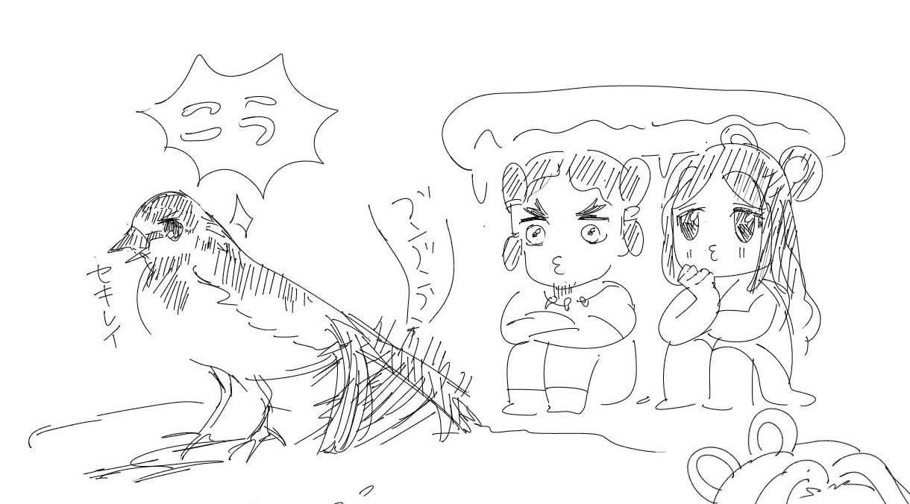

明けてしまうのが惜しいくらいすばらしい夜
ほんのわずかの間
来るはずの人を待っている宵
唐の詩人・白居易の詩句「雪月花時最憶君（雪月花のとき 最も君を憶（おも）ふ）」による語。冬の雪と秋の月と春の花。四季折々の景物。
帰ってほしくない人を引き留めるかのように降ってくる雨
セキレイの異名。イザナギとイザナミの二神がセキレイを見て夫婦の交わり方を知ったという神話による。恋知り鳥ともいう。

月で桂の木を切る人、または七夕の夜に彦星を乗せて天の川を渡る渡し守。
上弦の月のこと。形が舟を連想させることから。
月の神。古事記ではイザナギが黄泉の国のけがれをすすいだときに生まれたとされる。天照大神の弟。
春の季節になんとなく気がふさいで、ものうくなること。または思春期に抱く感傷的な気持ち。
葉と葉の間に連なったように咲いている椿の花のこと。万葉集の有名な和歌「巨勢山（こせやま）の つらつら椿 つらつらに 見つつ偲（しの）はな 巨勢の春野を」（坂本人足）より。
恋い慕う気持ちを蛍の光に例えた言葉
夕暮れ、西の空に見える金星
秋の虫がいっせいに鳴く声を時雨になぞらえた語
花が咲くこと、または咲いた花のような微笑み
桜の花を求めて歩きまわること。
花を入れて凍らせた氷柱。
寒い時期に作られた紅。色が鮮やかで美しいとされる。
この世の人、現世。古語の「現臣（うつしおみ）」が万葉集で「空蝉」の字をあてられたことから、セミの抜け殻の意味にも使われるようになった。
春の暖められた空気が糸が遊ぶようにゆらゆら立ち上ること。陽炎（かげろう）の別称。
春の陽気にうとうとすることを人の目を借りに来た蛙のせいにする言葉
カワウソが捕まえた魚類を川岸に並べるさまを祭りにたとえた言葉。「獺(かわうそ)魚を祭る」の短縮形。俳人の正岡子規は書斎に本を並べるさまが獺祭に似ているとうことで、「獺祭書屋(しょおく)主人」という別号を持つ。
寒さで凍ったように動かずにいる蝶
寒さを防ぐために雀が羽毛をふくらませて丸くふくれている様子
寒さでちぢこまり、温かい場所でじっとしている猫。
寒さのあまりかまどにもぐって灰だらけになる猫
こたつで丸くなる猫
恋に夢中になって鳴きながら浮かれ歩く猫
ウグイスの別名。
春に来るたくさんの鳥
実際に亀が鳴くことはないが、春になるとなんとなく鳴きそうだということで古くから俳句などに使われている不思議な季語。鎌倉時代の和歌「川越のをちの田中の夕闇に何ぞと聞けば亀のなくなり」（藤原為家）が典拠とされる。
月が出る直前、東の空が白々と明るく見えること
まだらにうっすら降り積もった雪
春の光を浴びてキラキラ輝いているように感じられるやわらかい風
桜が咲くころの明るく曇った空模様。
梅雨が降る頃の暗さ
若葉の間を吹きぬける爽やかな風
その年の冬に初めて降る時雨
木の枝に降り積もった雪が落ちること
雪の異名
雪の異名
霜の結晶
晴れた日に花びらのように風に舞う雪
次の雪が降るまで解けずに残っている雪
沫のようにやわらかく消えやすい雪
新春にたなびく霞
秋になって着る衣服。牽牛、織女二星が七夕の夜着る衣。「織女（たなばた）の五百機(いほはた)立てて織る布の秋去衣誰か取り見む」（万葉集）
秋去衣を織る女。七夕の織女の別名。織女にはこのほか朝顔姫、薫姫（たきものひめ）、糸織姫、蜘蛛姫(ささがにひめ)、蜘蛛姫(ささがにひめ)、百子姫(ももこひめ)の合わせて7つの異称がある。
藻塩をとるために用いる海藻。掻き集める→書き集めるの連想からも、随筆や手紙を指すこともある。
六角板状の結晶をなす珪酸塩鉱物。光沢が強いのでこう呼ばれる。「うんも」とも読む。
薄く張った氷
紅葉して日光に照り映える葉
さわやかな秋風の響き
秋の晴れた空
青空、大空。転じて遠方。
凍り付いたようなガラス
玉がほのかに輝くことから、「ほのか」「夕」「日」などにかかる枕詞。
明け方になっても残っている月
残っている雪
明かりをともす夕暮れ時
月の異名
月の異名
春に咲く花が冬に返り咲くこと。
上品で優雅なさま。風流。伊達(だて)。
死ぬほどに思い迷う。「消え惑へる気色 (けしき) いと心苦しくらうたげなれば」（『源氏物語』帚木）